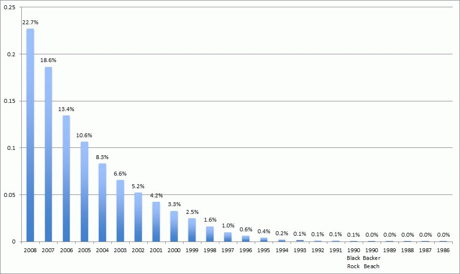
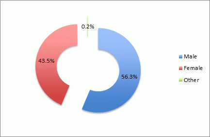
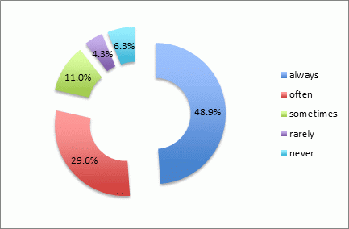
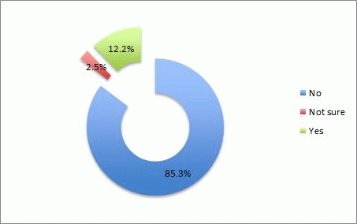
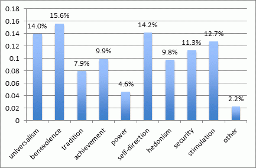
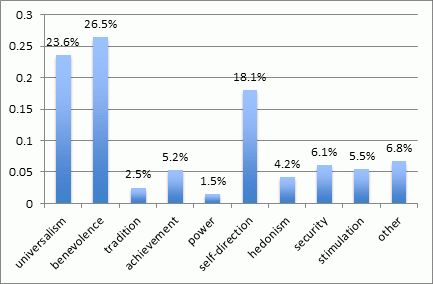
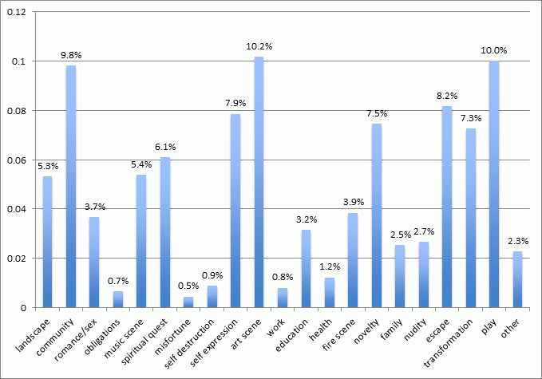
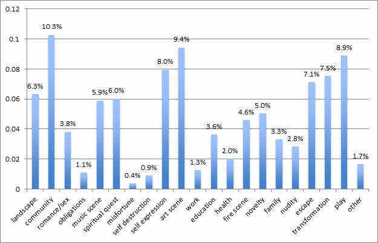

2009 After Burn Report
Welcome
While BRC Census has been producing reports since 2002, it is hard to compare recent data with reports from earlier years (before 2013) because of important differences in methodology, from a convenience sample of self-selected Census takers on-playa to a weighted online survey conducted after the Man burns.
Question: Which years did you attend Burning Man?

Question: How old are you?

Question: Which sex was assigned to you at birth?

Question: Do you consider yourself an artist?

Question: Do you consider yourself to be a person of color?

Question: Do you consider yourself to be white?

Question: Which best describes the place where you live?

Question: Do you vote?

Question: Did you volunteer with Burning Man outside of Black Rock City during the last year?

Question: Do you plan on returning to the playa?

Question: Which kinds of transportation got you to Burning Man?

Question: What are you up to this year at Burning Man? Fill in all that apply.

Question: Which of the following values are important to you? Fill in all that apply.

Question: Which value is most important to you? Fill one.

Question: I wish there was a place to buy supplies on the playa.
Question: Have you ever lied to anyone about where you were going when you were going to be at Burning Man?

Question: What reasons first brought you to Burning Man? Fill in all that apply.

Question: What are the reasons you are at Burning Man now? Fill in all that apply.

Question: What reasons first led you to reside where you do for the rest of the year? Fill in all that apply.

Questions: What are the reasons you reside there now?